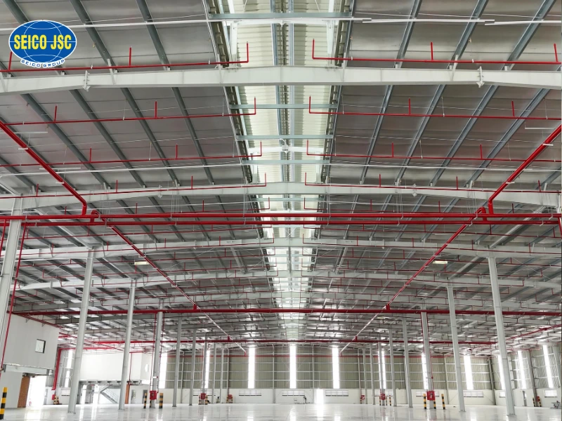
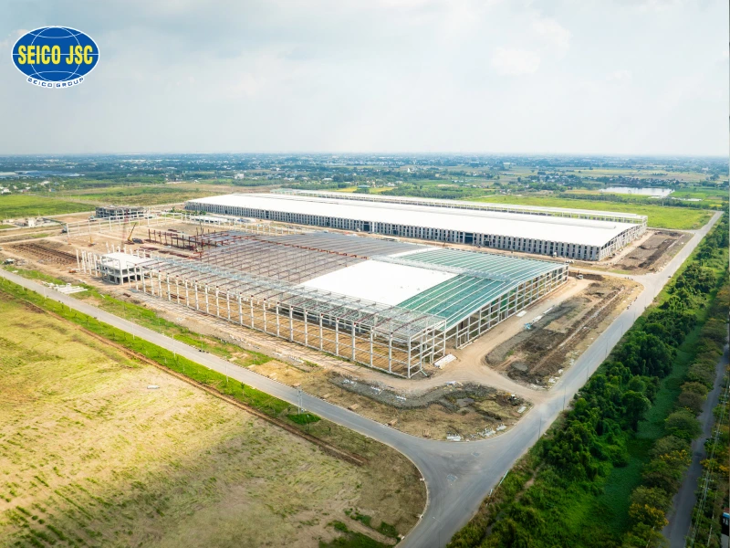
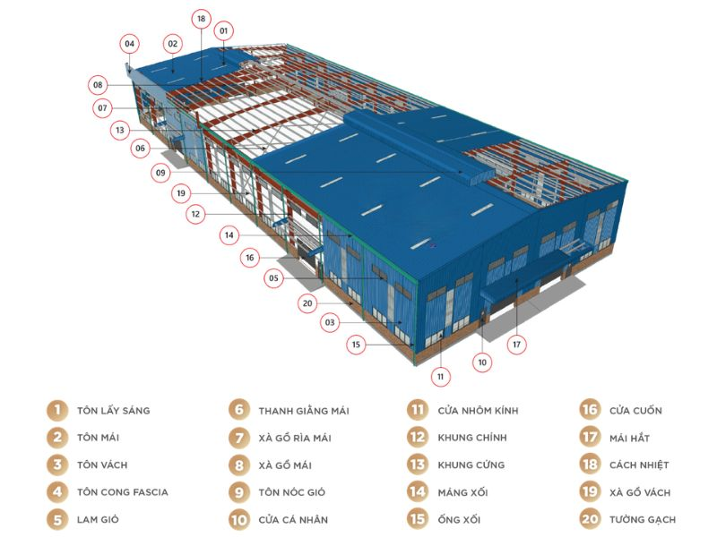
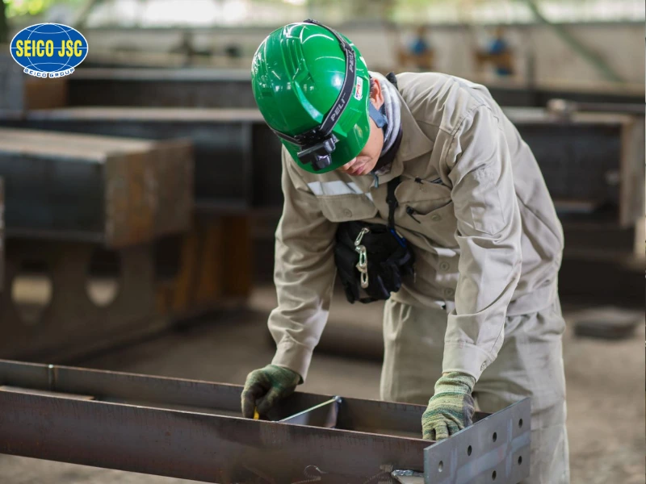
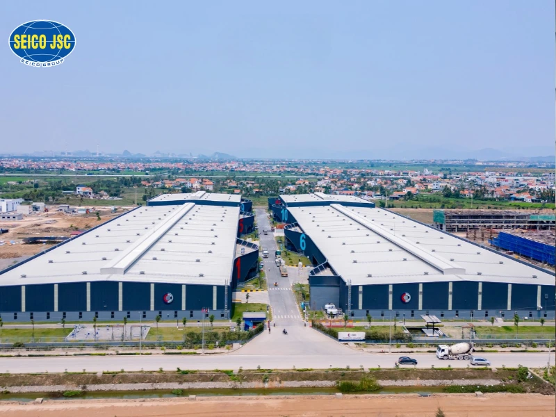
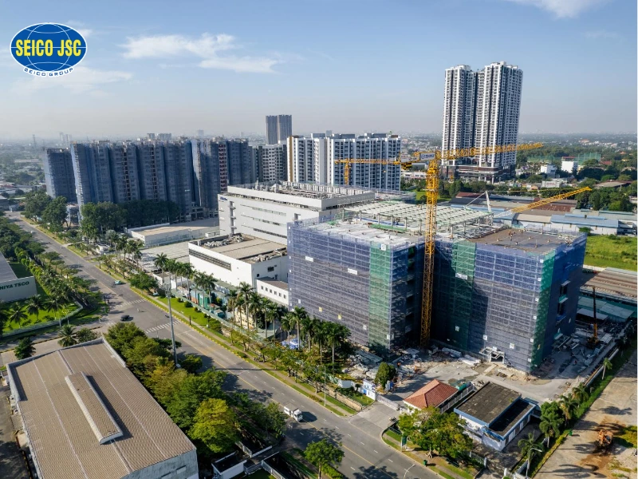
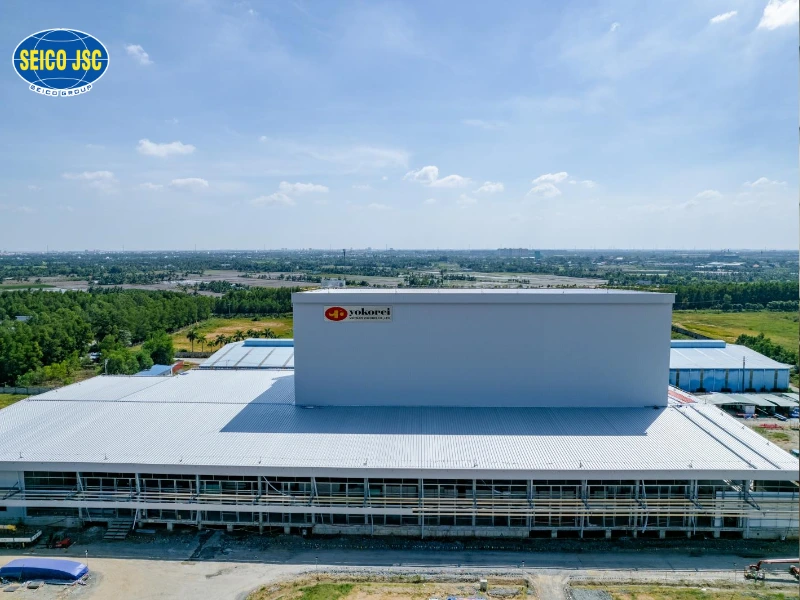
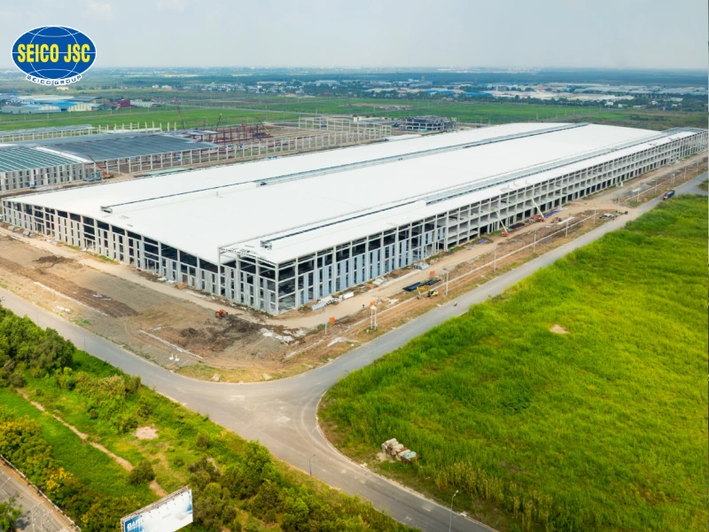
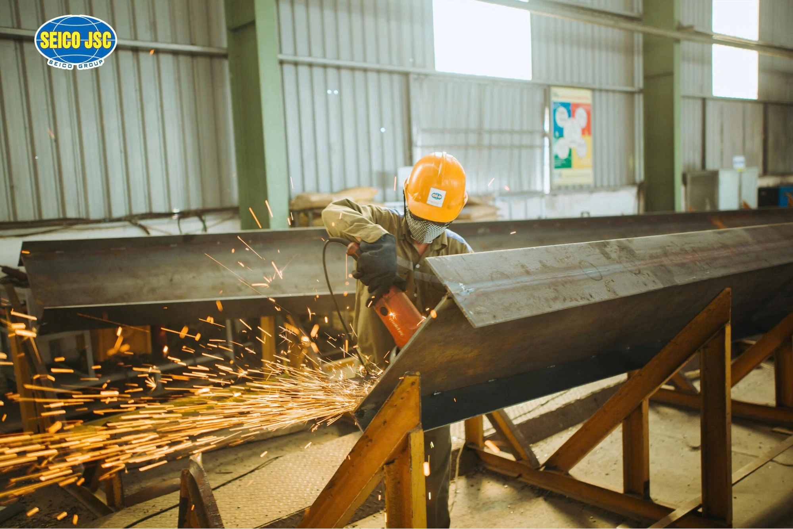

What is a pre-engineered steel building? Structure, applications and prices
-
03/11/2026
Pre-engineered steel buildings are becoming the best choice for many projects thanks to faster construction, lower investment costs, flexibility and high adaptability. In this article, SEICO will help investors understand the structure, advantages, types, construction process, factors affecting price and key points for choosing the right solution for each project.
1. What is a pre-engineered steel building?
A pre-engineered steel building (PEB), also called a pre-engineered steel frame building, is built from steel members (columns, rafters/beams, purlins, bracing,...) combined with roof and wall cladding to form a complete building. These members are manufactured and fabricated in the factory to technical drawings, then transported to site for final erection.

Pre-engineered steel buildings allow large clear spans with few intermediate columns.
2. Advantages and limitations of pre-engineered steel buildings
Pre-engineered steel buildings are valued for fast construction, design flexibility and a good return on investment. Despite their clear advantages, they still have technical requirements that must be properly calculated. With structural solutions, materials and standards optimized for each project, these requirements can be handled effectively, ensuring functionality, durability and return on investment.
2.1. Advantages of pre-engineered steel frame buildings
Pre-engineered steel frame buildings are widely used in industrial, logistics, commercial and agricultural projects because they speed up schedules, offer design flexibility and deliver a good return on investment. Compared with many other structural solutions, they have these key advantages:
-
Optimized total cost: Pre-engineered steel buildings reduce construction costs by using less material, shortening construction so the project starts operating sooner, and lowering site labour costs. The savings are especially clear for long-span buildings such as factories, logistics warehouses, shopping centers and industrial buildings.
- Fast construction: Because the steel structure is designed and manufactured in the factory and mainly uses bolted connections, pre-engineered steel buildings are easy to erect and can, in some cases, be dismantled and modified. As a result, construction is faster than with traditional reinforced concrete. Work can also run in parallel on site and in the factory. For example, while the foundations and below-ground works are being built, the steel members can be manufactured in the factory. Once the foundations are complete and have reached the required strength, steel erection can start immediately, shortening the overall project schedule.
- Versatile uses: Pre-engineered steel buildings suit many industrial and commercial projects, such as manufacturing plants, logistics warehouses, distribution centers, cold storage, showrooms, shopping centers and infrastructure. The span, height and future expansion can easily be adjusted to match the business's growth.
- High load capacity: Steel structures have a high strength-to-weight ratio and perform well in tension, compression and bending. This allows long spans, fewer columns and flexible space. Pre-engineered steel structures are also designed and manufactured together in the factory, so quality is controlled.
- Long building life: If designed, fabricated and maintained to standard, pre-engineered steel buildings last 30–50 years or longer depending on the environment and corrosion protection.

Advantages of pre-engineered steel frame buildings
2.2. Disadvantages of pre-engineered steel frame buildings
Despite their clear advantages, pre-engineered steel frame buildings still have some limitations investors should consider when choosing a construction solution.
-
Steel has high strength and a high strength-to-weight ratio, giving the structure good load capacity with low self-weight. However, because of its poor heat resistance, steel loses strength and deforms in a fire. Buildings with fire-resistance requirements therefore need fire-retardant paint or another suitable protection solution.
- For buildings with very large spans, special loads or complex architecture, requires strong design, fabrication and erection capabilities. Choosing an experienced contractor is key to ensuring quality and return on investment.
3. Structure of a pre-engineered steel building
A pre-engineered steel building is made up of many parts joined by welding or bolting to form a stable structure with the required strength, durability and functionality. Each component of pre-engineered steel structure each has its own role, from transferring loads to the foundations to protecting the building against the environment.
3.1. Foundation system
Like reinforced concrete buildings, steel structure buildings need foundations to carry the building's loads into the ground.
However, because steel structures are lighter than reinforced concrete, the load on the foundations is usually lower - which in many cases reduces foundation costs. How much depends on the loads, structural layout, wind/crane loads and ground conditions of each project.
Steel structure buildings can use pad, strip, raft or pile foundations depending on the building loads and ground conditions.
3.2. Primary members
Columns, rafters and beams are the main load-bearing members of a pre-engineered steel building, able to carry loads and create long-span spaces. The span depends on each project's use, loads and structural solution, and can range from a few dozen metres to over 100 m for special, purpose-designed buildings.
3.3. Secondary members
Secondary members of a pre-engineered steel building include:
- Purlins: Usually made of galvanized steel in C or Z shapes,... Purlins come in many heights and thicknesses, chosen according to the column spacing and loads. Purlin spacing is calculated from the design loads, frame spacing and roofing material to ensure the roof's strength and stability. Purlins are bolted to the rafters through plates pre-welded onto the rafters. Their main purpose is to support the metal roof above.
- Bracing system: Includes roof bracing, column bracing, gable bracing and auxiliary bracing. Bracing gives the building spatial stability, connects the frames and transfers lateral loads such as wind to the main load-bearing system, while keeping the frame stable during erection and throughout the building's life.
3.4. Floor system
For multi-storey steel buildings or buildings with floors, steel-concrete composite floor solutions can be used to increase load capacity, shorten construction time and reduce formwork.
Two common floor system solutions today are deck floor and floor SP Deck (Truss Deck).
3.5. Envelope (cladding) system
The envelope protects a pre-engineered steel building from the weather while providing thermal and acoustic insulation, saving energy and improving its appearance.
The envelope of a pre-engineered steel frame building includes:
- Roof system: roof sheets or insulated panels.
- Wall system: wall sheets or insulated panels.
- Natural daylight panels (skylights).
- Doors and ventilation.
- Gutters and roof drainage systems.
3.6. Accessories for pre-engineered steel frame buildings
Besides the primary and secondary members, pre-engineered steel buildings also need the following basic accessories:
-
Galvanized connection bolts, nuts and anchor bolts
-
Screws and rivets for roofs and walls
- Roof monitors (for ventilation) and skylight panels
- Gutters: collect rainwater from the roof and lead it to the downpipes; positioned according to the roof design
- Downpipes: carry water from the gutters down to the drains
- Lightning rods: conduct lightning to the ground to keep the building safe

Overall structural diagram of a pre-engineered steel frame building
4. Types of pre-engineered steel buildings
Pre-engineered steel buildings can be classified by use or by structural system. Each type is designed to meet the specific load, size, space and operating requirements of a project.
4.1. By function and purpose
Depending on the application, pre-engineered steel buildings are designed for these functions and uses:
-
Industrial: Widely used in manufacturing plants, pre-engineered factory building industrial plants, raw material and finished goods warehouses.
- Logistics and warehousing: Because they create open space and make the most of storage and operating area, pre-engineered steel buildings are used for logistics centers, distribution centers, warehouses and cold storage.
- Commercial - services: Includes showrooms, shopping centers, supermarkets, offices and service buildings made from pre-engineered steel. Their key advantages are long spans and design flexibility.
- Agriculture: Light steel structure are widely used on livestock farms thanks to fast construction, high durability and easy expansion. SEICO analyzes the specifics of this type of building in a separate article pre-engineered steel buildings in agriculture.
- Public buildings: Including schools, hospitals, sports halls, exhibition centers and stations,...
- Civil: Pre-engineered steel buildings are used for homes, villas, garages and auxiliary buildings, offering faster construction and modern architecture.

Large-scale pre-engineered steel industrial factory
4.2. By structural system
Besides function, pre-engineered steel buildings are also classified by structural system to meet each building's span, load and operating requirements.
- Clear-span pre-engineered steel building: No columns in the middle, creating open space suitable for factory construction, warehouses and logistics centers.
- Multi-span pre-engineered steel building: Uses multiple frame spans and rows of interior columns to increase building width, typically for large factories and warehouses.
- Pre-engineered steel building with overhead crane (Crane Building): Designed to carry overhead cranes for lifting operations in manufacturing plants and heavy industry.
- Multi-storey pre-engineered steel building: Steel or composite structures used for multi-storey buildings such as modern factories, offices and logistics facilities.

SEICO delivered the steel structure and SP Deck floors - a multi-storey project that makes the most of the land area.
5. Basic technical specifications of pre-engineered buildings
Technical specifications are the basis for designing and calculating the structure and ensuring the building meets its load, functional and investment requirements. Depending on size and use, they are adjusted to suit each project.
- Span: The horizontal distance across a pre-engineered building.
- Column spacing: The distance between 2 columns along the length of the building. Column spacing usually ranges from 6 m to 12 m.
- Building height: Can be determined by the eave height, ridge height or clear height depending on the design parameters. This height affects the layout of equipment and cranes and the building's ventilation.
- Roof slope: Determined by drainage requirements, roofing material and local climate.
- Design load: Depends entirely on how the building will actually be used, for example the layout of machinery and equipment and the movement of goods vehicles inside.
- Design loads include: Dead loads, roof/floor live loads, wind loads, crane loads (if any), seismic loads and other special loads as required by the project and applicable standards.

Diagram of span and column spacing in a pre-engineered steel building (image source: collected)
6. Pre-engineered steel building construction process
Building a pre-engineered steel building usually involves three main stages: design, fabrication of members and erection on site.
- Phase 1: Technical drawings, shop drawings and details of the materials used. Pre-engineered steel building design carried out by highly qualified engineers and architects optimizes the structure, details and functional solutions of the pre-engineered building. For large-span industrial buildings, businesses can see the detailed process in the article industrial building steel frame design.
- Phase 2: Materials are manufactured to the design. Once the design is complete, the drawings go to the production workshop for fabrication of the steel members. Fabrication quality is one of the key factors determining the accuracy and ease of erection, so this stage must be checked carefully, as it carries many risks that could lead to deviations during erection later.
- Phase 3: Erect the pre-engineered building, then inspect and complete the details. After fabrication, the members are transported to site for erection. The process pre-engineered steel building erection goes through steps such as: setting anchor bolts during foundation work, erecting columns, beams and purlins, installing roof and wall sheets,…

The three main stages of building a pre-engineered steel building: design, fabrication of members and erection on site
7. Pre-engineered steel building construction prices
Pre-engineered steel building construction has no fixed price; it depends on each project's size, use, structural solution and technical requirements, and usually includes these main items:
- Main steel structure cost (columns, rafters, beams).
- Secondary structure costs (purlins, bracing, connection accessories).
- Envelope costs (roof, walls, insulated panels, accessories).
- Transport and erection costs.
- Protective or fire-resistant paint costs (if any).
- Foundation, ground slab and other auxiliary works as the project requires
For more details, businesses can read SEICO's article on pre-engineered steel building prices.
8. Featured pre-engineered steel building projects that optimize function and investment
CORE5 Quang Ninh project
- Investor: Core5 Quang Ninh I Co., Ltd.
- Location: Bac Tien Phong Industrial Park, Phong Coc ward, Quang Yen town, Quang Ninh province
- Year completed: 2023
- Steel structure tonnage: 1,800 tons
- Cladding area: 70,000 m2 of roofing sheets
- Deck floor area: 7,000 m2 of form deck floor

At the CORE5 Quang Ninh project, SEICO acted as the integrated steel structure solution provider, directly delivering 3 core packages: steel structure – cladding – deck floor
Nitto Denko Vietnam project
- Investor: Nitto Denko Vietnam Co., Ltd.
- Location: VSIP Binh Duong Industrial Park
- Year completed: 2023
- Steel structure tonnage: 3,000 tons
- Deck floor area: 40,000 m2

At the Nitto Denko Vietnam project, SEICO proudly supplied and installed 3,000 tons of steel structure, fireproofing mortar and SP Deck floors totalling 40,000 m2
Yokorei cold storage project
- Investor: Yokorei Vietnam Co., Ltd.
- Location: An Thanh commune, Ben Luc district, Long An province
- Year completed: 2023
- Steel structure tonnage: 1,200 tons
- Deck floor area: 25,000 m2

SEICO supplied the steel structure and roofing solution for the Yokorei cold storage project - a high-quality frozen storage and cooling facility
Thai Tuan Textile Finishing Factory project
- Investor: Thai Tuan Group
- Location: Duc Hoa III Industrial Park - Duc Lap Ha commune - Tay Ninh province
- Year completed: 2025
- Area: 240,000 m2

SEICO delivered the steel structure package for the Thai Tuan factory project, with 240,000 m2 of factory space
9. SEICO - A trusted, high-quality provider of pre-engineered steel building solutions
Founded in 2003, SEICO has increasingly established itself as a comprehensive, trusted provider of pre-engineered steel building solutions in Vietnam. With more than 20 years in the industry, we have worked with many Vietnamese and foreign investors on thousands of pre-engineered building projects: from factories, logistics centers and light buildings for farms and high-tech agriculture to transport infrastructure, commercial and service buildings, healthcare and education,... SEICO's position is built on four core foundations:
- Large-scale production capacity meeting domestic and international technical standards: SEICO owns 4 modern factories in Hai Phong and a head office in Hanoi, applies an ISO 9001:2015 quality management system and ensures timely supply for large projects. SEICO also holds many other certificates and certifications, such as:
- ISO 14001:2015: Environmental management system certification.
- ISO 45001:2018: Occupational health and safety management system certification.
- EN ISO 3834-2:2021: Welding quality management system certification.
- EN ISO 9606-1:2017 certificate: welder skill testing, certified by the international body Apave (Italy).
- CE Marking certificate: certifies that products comply with European Union (EU) standards and quality management.
- Integrated total solution: SEICO provides customers with an integrated total solution covering: steel structure - floor systems (Deck floors such as H50W1000 deck floor/ SP Deck) - welded steel mesh through to industrial paint. This total solution from SEICO optimizes total investment cost, aligns technical standards across packages, shortens schedules and reduces risks during delivery projects. In particular, SP Deck sheets manufactured by SEICO JSC can cut construction time by at least 30% compared with standard deck floors.
- Experienced team: SEICO's experienced, dedicated engineers and workers continuously keep up with new standards and technologies to deliver optimal solutions for each industry (electronics, energy llogistics…). SEICO also has a network of representative offices in several Southeast Asian countries such as Thailand, the Philippines and Indonesia, which widens its connections and supports effective project delivery with international partners. Its experience delivering projects for FDI companies in Vietnam also enables SEICO to meet high international requirements for quality, schedule and technical standards.
- Experience from many large projects across diverse industries: SEICO has worked on many projects steel frame building such as Thai Tuan Textiles, Metro Line Ben Thanh, Ha Long EPC, CFG Factory, Taisan Dung Quat,... This proves our ability to meet diverse technical requirements across many sectors, from industrial and infrastructure projects to large civil and agricultural projects.

SEICO - A trusted pre-engineered steel building contractor10. Frequently asked questions about pre-engineered steel buildings
How much does a pre-engineered steel building cost per m2?
The cost of a pre-engineered steel building is not fixed; it depends on each project's area, use, span, materials, design loads and finishing requirements. For an accurate quote, please contact SEICO.
Are pre-engineered steel buildings durable? How many years do they last?
Pre-engineered steel buildings are highly durable when designed, fabricated and erected to standard. With regular maintenance and suitable corrosion protection, they can last 30–50 years or longer, depending on the environment and corrosion protection used.
Can pre-engineered steel buildings have multiple storeys? What is the maximum?
Yes. Pre-engineered steel buildings can be designed from one storey to many storeys using steel structures. The maximum number of storeys depends on the use, design loads, foundation conditions and technical standards of each project.
How long does it take to build a pre-engineered steel building?
Pre-engineered steel frame buildings usually take less time to build than traditional construction because members are prefabricated in the factory. The actual schedule depends on the size, structural complexity and site conditions, but completion time can be shortened considerably.
What total solutions does SEICO offer for pre-engineered steel buildings?
SEICO provides an integrated total solution: Steel structure – Steel floors (notably SP Deck, which cuts construction time by at least 30%) – Roofing – Industrial paint (steel structure protective paint, floor paint, fire-retardant paint,...). A turnkey solution helps investors optimize costs, align technical standards and shorten project delivery.
As you can see, pre-engineered steel building is a modern construction solution that meets requirements for schedule, durability and return on investment for many types of buildings. Choosing a contractor that can design, fabricate and build in an integrated way helps ensure quality and optimize costs over the long term. With more than 20 years of experience and a total solution for pre-engineered steel buildings, SEICO is ready to work with investors to deliver safe, durable and highly efficient buildings.
SEICO – True steel quality – Complete trust
-------------------
SEICO STEEL
- Website: http://seico.vn
- Email: hnsales@seico.vn
- YouTube: www.youtube.com/@SEICOJSC
- LinkedIn: https://vn.linkedin.com/company/seicovietnamsteelstructure